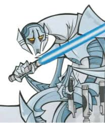

 General Grievous is a 7 foot 1 Jedi hunting Kaleensh cyborg. Who is being taught in the Jedi arts by his Sith master an ex Jedi named Count Dooku. General Grievous waged war upon the Glatic Republic for its trade disbutes on certain trading companies. with his massive droid army sponsered by said trading companies and all of the attacks being orchestrated by his master in a plot to weaken the Jedi backed Glatic Republic just enought to over throw their government. Over the course of the story Grievous collects the lightsabers of the Jedi he has slain to use for his own arresenal of weapons he either keeps on him or in his large cloak. In appeace Grievous is a tomb of metal with the only flesh part of him you can see from the outside being his yellow sunken eyes. on his body though he has clawed metal feet and hands he uses to grab both things and people. speaking of his arms Grievous has these some what bulky arms that can unwind to form into another set of arms to combat opponets with.
I chose General Grievous because the idea of him is just so awesome. on top of that the way he fights is cool because he need to use every little bit he has to fight the people he is fighting but I'll get into that tangent later when it rolls around. another reason I chose him is because he is a villian and I think on this assignment there will be a lot of heros.